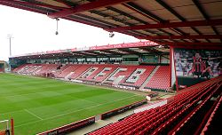
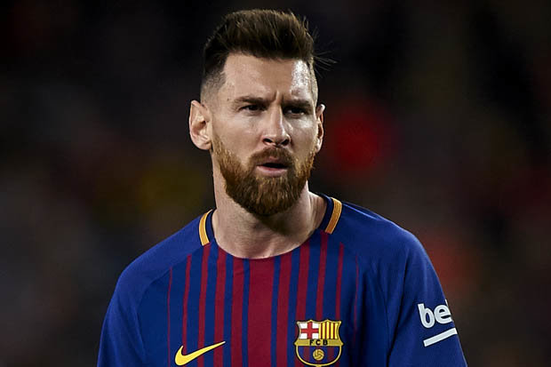
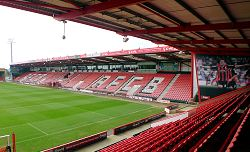
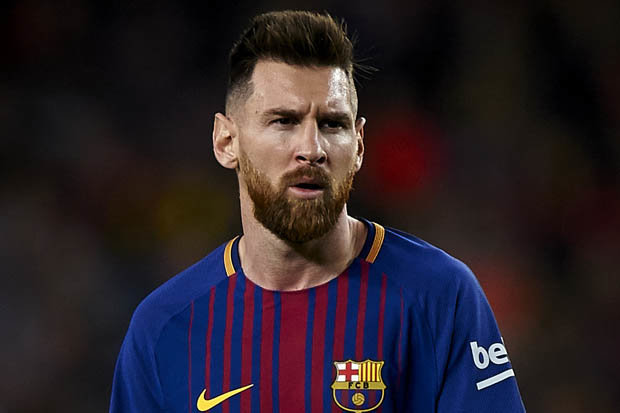
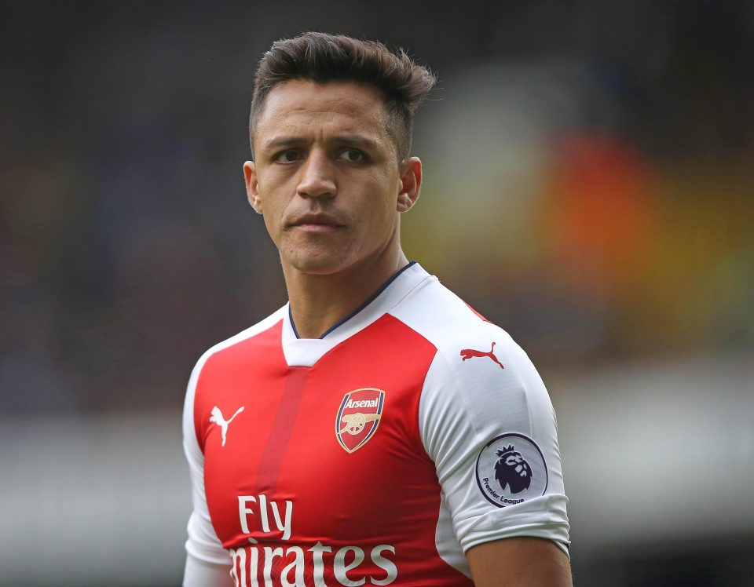
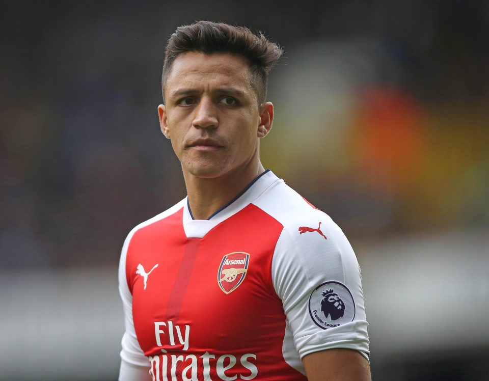

Home
Welcome to The Dugout, read more for all your football news and information
World Cup design classics: Germany’s 1990 shirt
Join Adam Hurrey in appreciation of the greatest of football shirts. Not even Frank Rijkaard’s sputum could ruin it.

Man United’s future left-back is no Shaw thing just yet
Luke Shaw gained enough marks during his first exam back in the Man Utd XI to earn another chance
Mediawatch: A bizarre attack on ‘very poor’ Paul Pogba
As a man who was asked in January to choose his combined Liverpool and Manchester United XI and came up with this…

 





 
